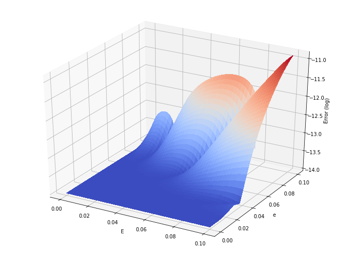

Map (series) inversion¶
(by Dario Izzo)
In this notebook we show how to use the map inversion algorithm to locally invert systems of non linear equations.
Importing stuff¶
In [1]:
from pyaudi import gdual_double as gdual
from pyaudi import sin, cos
from pyaudi import invert_map
The Double Pendulum end-point¶
Let us consider, in 2D, the end point position of a double pendulum.
\[\begin{split}x = l_1 sin(\theta_1) + l_2 sin(\theta_2) \\
y = -l_1 cos(\theta_1) - l_2 cos(\theta_2)\end{split}\]
We will develop a model for the inversion of this system of equations, so that \(\theta_1\) and \(\theta_2\) can be expressed as a function of \(x\) and \(y\)
In [2]:
# We show an image for clarity
from IPython.display import Image
from IPython.core.display import HTML
Image(url= "http://www.physicsandbox.com/assets/images/pendulum.jpg")
Out[2]:

Define our variables¶
In [3]:
# Lengths for the pendulum arms
L1 = 1.
L2 = 1.3
# Nominal values for thetas
th1n = 0.3
th2n = -0.2
# Gduals (high order)
th1 = gdual(th1n, "\\theta_1", 11)
th2 = gdual(th2n, "\\theta_2", 11)
# Equations
x = L1*sin(th1)+L2*sin(th2)
y = -L1*cos(th1)-L2*cos(th2)
In [4]:
# Lets visualize the Taylor polinomial expansion for x
x
Out[4]:
\[ 1.27409{d\theta_2}+2.63265e-06{d\theta_1}^{9}-0.000410445{d\theta_1}^{6}+3.51104e-06{d\theta_2}^{9}-0.159223{d\theta_1}^{3}+0.0372501+0.000358709{d\theta_2}^{6}-0.000252795{d\theta_2}^{7}-0.212348{d\theta_2}^{3}-2.39332e-08{d\theta_1}^{11}+7.32937e-06{d\theta_1}^{8}+0.00796114{d\theta_1}^{5}-0.0107613{d\theta_2}^{4}-0.14776{d\theta_1}^{2}+0.0106174{d\theta_2}^{5}-8.14374e-08{d\theta_1}^{10}-6.40551e-06{d\theta_2}^{8}-0.000189551{d\theta_1}^{7}+0.0123133{d\theta_1}^{4}+0.955336{d\theta_1}+\ldots+\mathcal{O}\left(12\right) \]
In [5]:
# Lets visualize the Taylor polinomial expansion for y
y
Out[5]:
\[ -0.25827{d\theta_2}+8.14374e-07{d\theta_1}^{9}+0.00132686{d\theta_1}^{6}-7.11723e-07{d\theta_2}^{9}-0.0492534{d\theta_1}^{3}-2.22942+0.00176956{d\theta_2}^{6}+5.12441e-05{d\theta_2}^{7}+0.043045{d\theta_2}^{3}-7.4034e-09{d\theta_1}^{11}-2.36939e-05{d\theta_1}^{8}+0.00246267{d\theta_1}^{5}-0.0530869{d\theta_2}^{4}+0.477668{d\theta_1}^{2}-0.00215225{d\theta_2}^{5}+2.63265e-07{d\theta_1}^{10}-3.15994e-05{d\theta_2}^{8}-5.8635e-05{d\theta_1}^{7}-0.0398057{d\theta_1}^{4}+0.29552{d\theta_1}+\ldots+\mathcal{O}\left(12\right) \]
Compute the inverse map¶
In [6]:
# And let us invert the relationship
res = invert_map([x,y])
th1_map = res[0]
th2_map = res[1]
In [7]:
# Lets visualize the Taylor polinomial expansion for th1
th1_map
Out[7]:
\[ -33.3889{dp0}^{2}{dp1}^{2}+2.97638{dp0}^{2}{dp1}-1.53985e+08{dp0}^{2}{dp1}^{8}+7.49742{dp0}^{4}{dp1}-1.18854{dp0}^{8}-450.043{dp1}^{4}-0.461981{dp0}^{2}-60579.9{dp0}{dp1}^{6}+13499.7{dp0}^{7}{dp1}^{3}-19.2519{dp0}^{3}{dp1}^{2}+4.30881e+06{dp0}^{6}{dp1}^{5}+1.03732{dp0}^{3}{dp1}-2.89428e+08{dp0}^{3}{dp1}^{8}+4.30674{dp0}^{5}{dp1}-0.913559{dp0}^{9}+7.34785e+07{dp1}^{9}-5141.9{dp0}^{3}{dp1}^{4}-0.0793933{dp0}^{3}-45079.9{dp0}^{5}{dp1}^{4}-47904.3{dp1}^{6}+\ldots+\mathcal{O}\left(12\right) \]
In [8]:
# Lets visualize the Taylor polinomial expansion for th2
th2_map
Out[8]:
\[ 25.7695{dp0}^{2}{dp1}^{2}-2.34715{dp0}^{2}{dp1}+1.18575e+08{dp0}^{2}{dp1}^{8}-5.78329{dp0}^{4}{dp1}+0.917051{dp0}^{8}+347.27{dp1}^{4}+0.343531{dp0}^{2}+46667.1{dp0}{dp1}^{6}-10399{dp0}^{7}{dp1}^{3}+14.7909{dp0}^{3}{dp1}^{2}-3.3184e+06{dp0}^{6}{dp1}^{5}-0.872053{dp0}^{3}{dp1}+2.22845e+08{dp0}^{3}{dp1}^{8}-3.30875{dp0}^{5}{dp1}+0.704389{dp0}^{9}-5.65823e+07{dp1}^{9}+3962.12{dp0}^{3}{dp1}^{4}+0.00876767{dp0}^{3}+34726{dp0}^{5}{dp1}^{4}+36914.5{dp1}^{6}+\ldots+\mathcal{O}\left(12\right) \]
Compute \(\theta\) from \(x\)¶
In [9]:
# First we extract the x,y position around the nominal thetas
xn = x.constant_cf
yn = y.constant_cf
In [10]:
print("x nominal is: ", xn)
print("y nominal is: ", yn)
x nominal is: 0.037250076627759976
y nominal is: -2.22942304031922
In [11]:
# Lets assume some desired (close to nominal) values for the end point
xd = 0.04
yd = -2.21
# And compute the change with respect to the nominal position
dx = xd - xn
dy = yd - yn
# We now compute the thetas
th1d = th1n + th1_map.evaluate({"dp0": dx, "dp1": dy})
th2d = th2n + th2_map.evaluate({"dp0": dx, "dp1": dy})
# Let us check that indeed they are producing the desired end point position
xdi = L1*sin(th1d)+L2*sin(th2d)
ydi = -L1*cos(th1d)-L2*cos(th2d)
In [12]:
print("Error in x: ", xdi-xd)
print("Error in y: ", ydi-yd)
Error in x: -9.838373171699999e-12
Error in y: 1.7152856912616699e-10
In [13]:
ydi
Out[13]:
-2.2099999998284714
The Kepler’s Equation¶
Let’s consider the long standing problem of inverting Kepler’s equation:
\[M = E - e sin(E)\]
and face it using the map inversion functionality of pyaudi
Define our variables¶
In [14]:
# Nominal values (expansion points) for eccentric anomaly and eccentricity
En = 0
en = 0
# gduals
E = gdual(En, "E", 11)
e = gdual(en, "e", 11)
# The equation
M = E - e*sin(E)
In [15]:
# Lets visualize the Taylor polinomial expansion for M (mean anomaly)
M
Out[15]:
\[ {dE}-0.00833333{dE}^{5}{de}+0.000198413{dE}^{7}{de}-{dE}{de}-2.75573e-06{dE}^{9}{de}+0.166667{dE}^{3}{de}+\mathcal{O}\left(12\right) \]
Invert the map¶
In [16]:
# We need to have the same symbol set in the variables
e.extend_symbol_set(["de", "dE"])
# We may now create the inverse map
res = invert_map([M, e])
E_map = res[0]
e_map = res[1]
In [17]:
# Lets visualize the Taylor polinomial expansion for E as a function of M (p0) and e (p1)
E_map
Out[17]:
\[ -20{dp0}^{3}{dp1}^{8}+0.00833333{dp0}^{5}{dp1}-3.33333{dp0}^{3}{dp1}^{4}+2.8{dp0}^{5}{dp1}^{4}+0.133333{dp0}^{5}{dp1}^{2}+{dp0}{dp1}^{10}-1.66667{dp0}^{3}{dp1}^{3}+0.758333{dp0}^{5}{dp1}^{3}+0.000705467{dp0}^{9}{dp1}^{2}+{dp0}{dp1}^{8}-0.000198413{dp0}^{7}{dp1}+2.75573e-06{dp0}^{9}{dp1}-1.07937{dp0}^{7}{dp1}^{4}-0.0126984{dp0}^{7}{dp1}^{2}+{dp0}{dp1}^{6}+{dp0}{dp1}^{2}-14{dp0}^{3}{dp1}^{7}+8.05{dp0}^{5}{dp1}^{5}-0.162698{dp0}^{7}{dp1}^{3}-5.83333{dp0}^{3}{dp1}^{5}+\ldots+\mathcal{O}\left(12\right) \]
Compute \(E\) from \(M\)¶
In [18]:
# We now investigate how accurate this map is around the nominal point
from mpl_toolkits.mplot3d import Axes3D
import matplotlib.pyplot as plt
from matplotlib import cm
from matplotlib.ticker import LinearLocator, FormatStrFormatter
import numpy as np
N = 50
M_grid = np.linspace(0,0.1,N)
e_grid = np.linspace(0,0.1,N)
# Make data.
X, Y = np.meshgrid(M_grid, e_grid)
Z = np.zeros([N,N])
for i in range(N):
for j in range(N):
res = E_map.evaluate({"dp0": X[i,j], "dp1": Y[i,j]}) + En
Z[i,j] = np.log10(np.abs(X[i,j] - res + Y[i,j]*sin(res)) + 1e-14)
# Prepare the plot
fig = plt.figure(figsize=(12, 9))
ax = fig.gca(projection='3d')
# Plot the surface.
surf = ax.plot_surface(X, Y, Z, cmap=cm.coolwarm,
linewidth=0, antialiased=False)
ax.set_xlabel('E')
ax.set_ylabel('e')
ax.set_zlabel('Error (log)')
plt.show()
